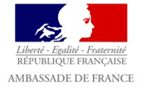
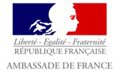

This year the International Festival of Culture "The April cultural festival in Tarija", once again remains impressive under the sky of Tarija, in various artistic fields such as; Painting, Theater, Poetry, Dance, Cultural Legislation, Music and Cultural Management. Intercultural encounters will shine with its wide range of sounds, melodies and rhythms, written in the staff. Classical, Baroque, Jazz, Rock, Folklore, delighting the local, national and international public, exposing the best of Tarija. The intervention of several artists and intellectuals who will participate directly in the realization of different cultural activities among them national and international visitors since it is desired to promote artistic shows from different regions.
Pease contact us per Email for any futher questions about the April cultural festival in Tarija 2022!
aprilculturaltarija@gov-tja.bo >
The logo of The April cultural festival in Tarija was decided through the logo competition from 8. January to 7. February. After online public voting and Selection Committee's judging process, the logo from Juan Perez won the prize. After consultation with Mr. Perez we optimized the prize-winning-logo for this year's festival as following:
Take a look at the memories of two previous festivals


 
